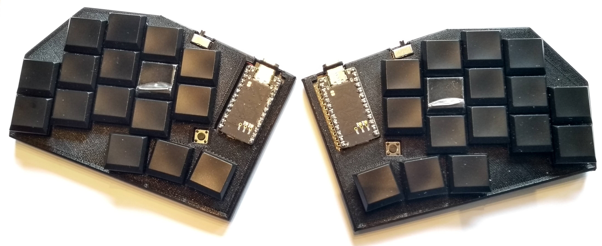

<article style="align: center">
    <h1>Miniki v2</h1>
    A split bluetooth keyboard with 16 keys per side<br>
    <p>
        <a href="https://github.com/tammingaj/miniki-config">The ZMK firmware keymap configuration</a><br>
        <a href="https://github.com/tammingaj/miniki-hardware">The gerber files for pcb factories</a><br><br>
        
    </p>

</article>